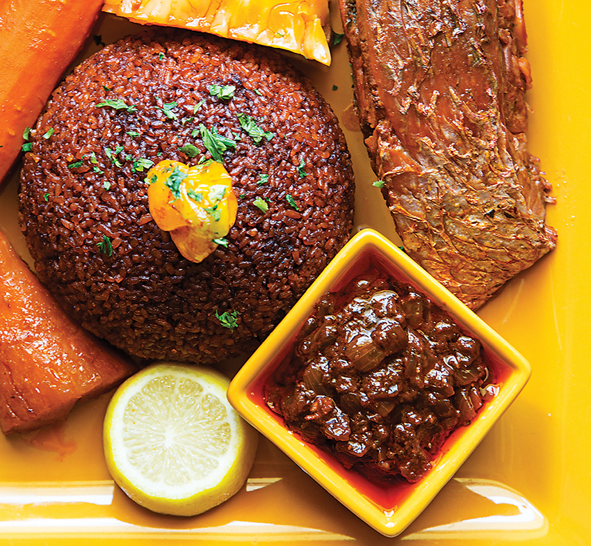

Thiebou Djeun

Thiebou Djeun means “rice with fish.” This simple dish
is a national delicacy in Senegal, a country located on
the west coast of Africa with easy access to everything the
sea has to offer, including food.
While oral tales vary slightly when it comes to conveying
the inspiration behind this dish, a renowned community cook
named Penda Mbaye is often credited with making the first
documented Thiebou Djeun in the 19th century. Nonetheless,
one central element binds all the different narratives:
the love of culinary arts, and passion for sharing.
According to local storytellers, Mbaye used to work as a
cook in one of Saint-Louis' colonial residences. Back then,
Saint-Louis was the political and cultural capital of
Senegal and the principal place of residence of the French
colonizers. Mbaye would cater for large ceremonies, official
events, and elite social gatherings in Saint-Louis. However,
there came a season where the region experienced a shortage
of barley, which was the more popular grain in Senegal's
kitchens at the time. Mbaye used rice instead, which gave
birth to the Thiebou Djeun recipe as we know it today.
Nowadays, variants of the recipe exists across Senegal,
where fish is replaced by other elements, including
Thiebou Yapp (rice with beef or lamb);
Thiebou Guinar (rice with chicken), and
Thiebou Guerte (rice with peanuts).
Ingredients
For the fish and stuffing
- 1/4 cup finely chopped parsley
- 2 tsp. crushed red chile flakes
- 6 cloves garlic, minced
- 2 scallions, minced
- 1/4 small yellow onion, minced
- Kosher salt and freshly ground black pepper, to taste
- 8 (4-oz) filets grouper or red snapper
For the Thiebou Djeun
- 1/2 cup canola or palm oil
- 2 medium yellow onions, roughly chopped
- 1 medium green bell pepper, stemmed, seeded, and roughly chopped
- 1 (12-oz.) can tomato paste
- 6 cups fish or vegetable stock
- 6 small carrots, halved crosswise
- 1 large eggplant, cut into large chunks, or 4 small Thai eggplants
- 1 medium turnip, peeled and cut into 12 wedges
- 1/2 cassava root, peeled and cut into 1 1/2″ chunks
- 1/3 cup dried white hibiscus flowers (optional; see below for ordering)
- 2 tbsp. tamarind paste
- 2 tbsp. fish sauce
- 4 cups basmati rice
- Lime wedges, to serve
Instructions
Marinating the fish
- With a mortar and pistol or in a food processor, grind the parsley, garlic, scotch
bonnet, bullion black pepper and salt into a rough paste.
- Poke two holes into the flesh of the fish and stuff them with the parsley mix.
- Broil or Fry the fish until it is golden brown on each side, and set aside for the sauce.
How to cook the rice
- In a mortar and with a pestle or in a food processor grind the scotch bonnet peppers and garlic into a rough paste)
- Saute the sliced onions in the oil over medium heat until translucent
- Add in the tomato paste, and stir fry for 5 minutes. The tomato paste may start to brown a little.
- Add in the ground garlic and scotch bonnet and stir fry for another 2 minutes
- Add in bullion, black pepper, and 8 cups of water. At this stage, taste the sauce for salt, and adjust to your preference.
- Add in the tough vegetable first in to the sauce and cook until tender. In this case, add in the sweet potatoes, cook until tender and remove, then the carrots, cook until tender and remove. Continue adding in the vegetables until all the vegetables are cooked.
- Set the cooked vegetables aside and then add in the fish and cook in the sauce for 2-5 minutes.
- Once the fish has simmered in the sauce for 2-5 minutes, gently remove it from the sauce.
- At this point, drain the rice that has been cooking and pour into the sauce. The sauce should just cover the rice. Adjust the amount of water at this stage if needed to make sure that the rice is just covered.
- Cover the pot and simmer on low-medium heat for 15-20 minutes. You may seal the cover of the pot with foil to prevent steam from escaping.
- At the 15 minute mark, check that the rice has absorbed the moisture and is soft. Cover and cook for another 5 minutes if it needs more time. If the water has dried up and the rice is still not soft, add in 4 tbsp of water, cover and allow to cook.
- Serve hot with the vegetables and fish, and lime wedges